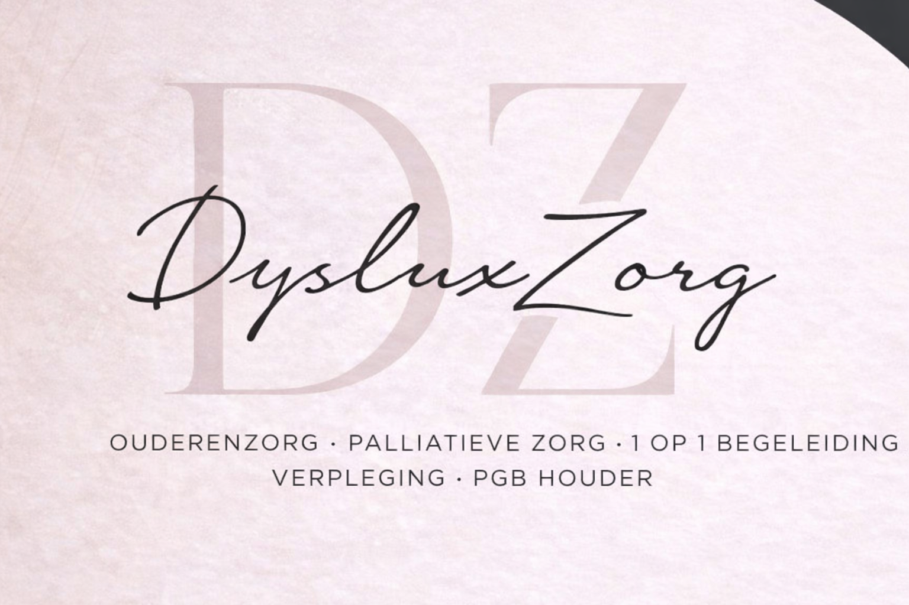

Persoonlijke ondersteuning voor ouderen in hun eigen vertrouwde omgeving.
Zorg en begeleiding in de laatste levensfase met aandacht en respect.
Individuele begeleiding afgestemd op de behoeften van de cliënt.
Professionele verpleegkundige zorg en ondersteuning.
Flexibele zorg voor cliënten met een Persoonsgebonden Budget.
DysluxZorg is een zelfstandige zorgverlener (ZZP) gevestigd in Den Haag. Wij bieden professionele en persoonlijke zorg voor ouderen die ondersteuning nodig hebben in het dagelijks leven.
Onze missie is om cliënten zo lang mogelijk comfortabel en veilig thuis te laten wonen.
DysluxZorg biedt zorg en begeleiding in: